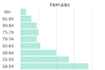
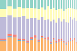

Trafford Data Lab
Supporting decision-making in Trafford by revealing patterns in data through visualisation. On this page you can find outputs arranged into 4 categories, with a selection of these featured below. The category links take you directly to each section.
Explore

Discover the different geographic areas of Trafford and visualise all of our spatial datasets in one application. Use the geolocation facility (on supported devices with the user's permission) to see where you are and discover what is around you.
Census 2021
Visit our Census 2021 collections page for all our outputs relating to the census conducted by the Office for National Statistics in 2021 and published between 2022-2023.
Trafford's population estimates
Analysis of Trafford's population change by age and components such as migration, deaths and births from mid-2022 to mid 2023.
Trafford wards and localities
Map of Trafford showing the boundaries of the 21 wards and 4 localities.
Further outputs are available from the main menu and common terms used throughout the website are in our glossary.
Apps
Ward Profiler

In-depth information focussing on each of Trafford's wards. The information is presented in thematic sections as interactive maps and charts allowing for easy comparisons to be made. You can also download the data and code behind the visualisations.
Explore
Discover the different geographic areas of Trafford and visualise all of our spatial datasets in one application. Use the geolocation facility (on supported devices with the user's permission) to see where you are and discover what is around you.
Trafford Themes
Interactive dashboard visualising data and comparisons for a range of themed indicators. These themes relate to the work undertaken by Trafford Council, including those defined by the corporate priorities, as well as other areas, providing an overview of the borough.
Population Picker
Discover population figures for the different statistical and administrative geographies. Choose areas of interest and export the aggregated data.
Flood Risk Monitor
Interactive map combining datasets from the Environment Agency and Ordnance Survey showing flood risk from watercourses in and around Trafford and the latest available water level readings.
Road casualties

Application enabling users to explore GM reported road traffic accidents involving personal injury between 2010 and 2023.
Postcode Loader
An R Shiny app allowing users to download the latest postcode centroids from the Office for National Statistics' Open Geography Portal API.
Postcoder

This R Shiny application powered by Postcodes.io allows you to find administrative and statistical geographies for a given postcode. You can either enter the postcode manually or click on the map to find the nearest postcode to the corresponding coordinates.
Climate emergency slide pack
More than half of UK councils have declared a "climate emergency". This tool is designed to support local councils by visualising open data relating to climate change. We have also created an accompanying climate emergency open data companion.
English Indices of Deprivation 2019

Interactive visualisation of the data released by the Ministry of Housing, Communities & Local Government for Lower-layer Super Output Areas (LSOA) across England by Local Authority District. Please visit our Indices of Deprivation 2019 page for further resources.
Choroplether

Create choropleth maps of your own data in Vega-Lite without having to write all the code yourself. Export the output as an image or embed it in a web page.
Plotter

Create and edit map features in the form of lines, polygons, circles and markers and save the results. Load previously saved data and add to it, or use it in other applications such as Graphical Information Systems (GIS) software.
Schools in Trafford

Find schools and colleges in Trafford by phase, type, Ofsted rating and other filters. Links to Ofsted reports, performance comparisons and the schools' websites are also provided.
Public Parks in Trafford

Discover the facilities available within the public parks in Trafford. Information regarding the various friends' groups is also available.
Collections
Trafford Wards
All our outputs and resources relating to Trafford's wards which came into force in May 2023. Profiles are available for each ward which include data from the 2021 census.
Census 2021
Visit our Census 2021 collections page for all our outputs relating to the census conducted by the Office for National Statistics in 2021 and published between 2022-2023.
COVID-19
Visit our COVID-19 collections page for all our outputs and resources relating to the coronavirus pandemic.
English Indices of Deprivation 2019

Resources, including Local Authority and ONS ‘best-fit’ ward reports, relating to the Indices of Deprivation 2019 data released by the Ministry of Housing, Communities & Local Government.
Reports
Claimant Count and Universal Credit in Trafford
Analysis of claimant count and Universal Credit claims in Trafford over time, including area and age-group breakdowns. This report is updated on a regular basis using data from Nomis.
Trafford's population projections
Analysis of Trafford's population projections based on 2022 including growth to 2032 and splits by age.
Trafford's population estimates
Analysis of Trafford's population change by age and components such as migration, deaths and births from mid-2022 to mid 2023.
Mid-Year population for Trafford’s wards
Analysis of Trafford's wards population figures including population change and population pyramids for each ward from the Mid year population estimates comparing 2022 to 2021.
2021 Ethnicity, Identity, Language and Religion

This report analyses the data published regarding the ethnic group, national identity, language, and religion of residents from the 2021 census and compares it to similar data from the census in 2011.
Trafford's PIP claims
Analysis of Personal Independence Payment (PIP) claim figures in Trafford by disability or disorder, age and MSOA in January 2025, as well as changes from January 2020.
Graphics
Trafford wards and localities
Map of Trafford showing the boundaries of the 21 wards and 4 localities.
Resident population of Trafford

Mid-year 2022 resident population estimates for Trafford visualised by electoral ward.
Index of Multiple Deprivation 2019 for Trafford

Visualising the data released by the Ministry of Housing, Communities & Local Government for Lower-layer Super Output Areas (LSOA) in Trafford. The Index of Multiple Deprivation 2015 version is also available. Please visit our Indices of Deprivation 2019 page for further resources.
2011 Output Area Classification

The Output Area Classification is an open source geodemographic classification that uses the 2011 Census to group the UK's Output Areas. Explore the pen portraits and radial plots for information about the classifications.